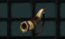

FENRIR
(Splinter of armor, Bless of guardian, Clawn of beast)
FENRIR Es una de las pets que se pueden crear en el juego.
Se obtiene mediante las siguientes combinaciones:
Fragment of Horn: Se necesitan 20 Splinter of armor, 20 Bless of guardian y 1 chaos.
(Esto da una probabilidad del 70%).Broken of Horn: Se necesitan 5 fragments of horn, 10 Clawn of Beast y 1 chaos.
(Esto da una probabilidad del 50%).

Horn of fenrir: Se necesita 1 Broken of Horn, 3 Jewels of life y 1 chaos.
(Esto da una probabilidad del 40%).Dónde buscar cada ítem inicial:
Splinter of armor: caen en Land of trials.
Bless of Guardian: cae en tarkan.

Clawn of Beast: cae en relic.